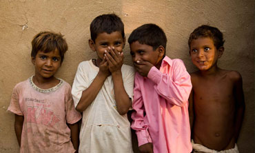

Poverty, the state of one who
lacks a usual or socially acceptable amount of money or material possessions
Poverty is said to exist when people lack the means to satisfy their basic needs.
In this context the identification of poor people first requires a determination of what constitutes basic needs.
User also send money to poor people through this site and to provide things as much as you can, to the kids over there like eatables, clothes, buckets, detergent powder, soap, hair oil sachets, tooth brush, tooth paste, combs, shampoo sachets, napkins, Inner wears, pillow covers, pillows, blankets, mats, stainless steel plates, stainless steel tumblers(do avoid plastic as much as you can, especially in things that are gonna be in contact with the food) etc. You can buy monthly provisions especially oil and dal. Because many give rice but not the other provisions.
There are a few homes which sell the donated rice sacks in the markets in return for money. Users also provide clothes through this site
